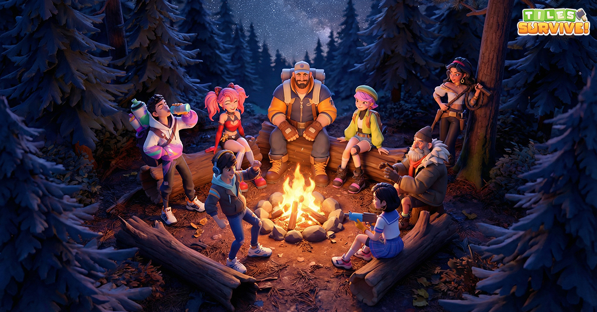

If you log onto Steam right now, you'll see a dark horse dominating the charts: Once Human. Starry Studio's open-world survival game has captured the gaming community's attention with its eerie Lovecraftian atmosphere, satisfying base-building, and cooperative boss fights.
But is it worth the hard drive space? The answer is a resounding yes. If you are tired of generic zombies and copy-paste wilderness simulators, Once Human is the breath of polluted alien air you've been waiting for. Here is our complete review and step-by-step guide on how to play for free on Windows PC.
The Hook: Lovecraftian Cosmic Horror
The premise is simple but haunting. An alien substance called Stardust has fallen to Earth, mutating the ecosystem, water, animals, and technology. You wake up as a Meta-Human—a mutant survivor who can handle Stardust without going mad. Your goal is to explore the ruined world, build structures, and find the source of the Stardust before humanity collapses.
The designs are deeply unsettling. You'll fight colossal monsters with spotlights for heads, flying houses, and spider-like machines. It feels like playing a survival game inside a Stephen King novel.

The Gameplay Loop: Gather, Craft, Build, Conquer
Once Human integrates classic survival mechanics with a deep RPG progression system:
- Frictionless Base Building: Place your Territory Terminal anywhere in the open world. Construct custom cabins, set up electrical grids, hook up water purifiers, and build automated mineral miners.
- Gunplay & Modification: Collect blueprints to craft everything from submachine guns to heavy sniper rifles. Mod your weapons with elemental attributes like fire, frost, or explosive rounds.
- Cooperative Purification: purified items trigger waves of mutated invaders. Team up with friends in Hives to defend your base against massive horde assaults.
Sanity Check Warning
Stardust decreases your maximum health over time by lowering your Sanity. Always carry sanity pills or build a bed to rest at your base to restore your mind before exploring high-level Monoliths!
How to Play Once Human on PC
Ready to start your survival story? Follow this simple download and installation guide:
- Navigate to the Official Partner Link: Click the download button below to go directly to the verified Once Human Portal.
- Redirect to Steam: The page will direct you securely to the Steam client catalog page.
- Add to Library & Install: Click the green "Play Game" button on Steam. It will prompt you to install the game client via your Steam application.
- Launch & Create Role: Once the download finishes, launch the game, select a server (join a PvE server if you prefer base-building or PvP if you want territory wars), customize your Meta-Human, and enter the wild!